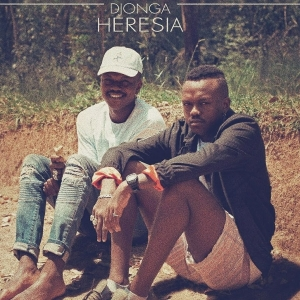

| Faixa | Música | Duração |
|---|---|---|
| 1 | Corre das Notas | 3:38 |
| 2 | Entre o Código da Espada e o Perfume da Rosa | 2:08 | 3 | Esquimó | 4:17 | 4 | Fantasmas | 3:57 | 5 | Santa Ceia | 3:39 | 6 | Verdades Inventadas | 3:32 | 7 | Geminiano | 3:40 | 8 | Heresia | 2:12 | 9 | Irmãos de Arma, Irmãos de Luta | 2:46 | 10 | O Mundo é Nosso | 3:36 |
O rapper Djonga lançou o álbum Heresia. O projeto tem 10 faixas e cerca de 40 minutos. Djonga é o primeiro do grupo de artistas que entrou na série de Cyphers “Poetas no Topo” a divulgar um álbum após as rimas na Cypher. A capa do álbum é uma referência direta ao LP “Clube da Esquina”, de Milton Nascimento em parceria com Lô Borges.
